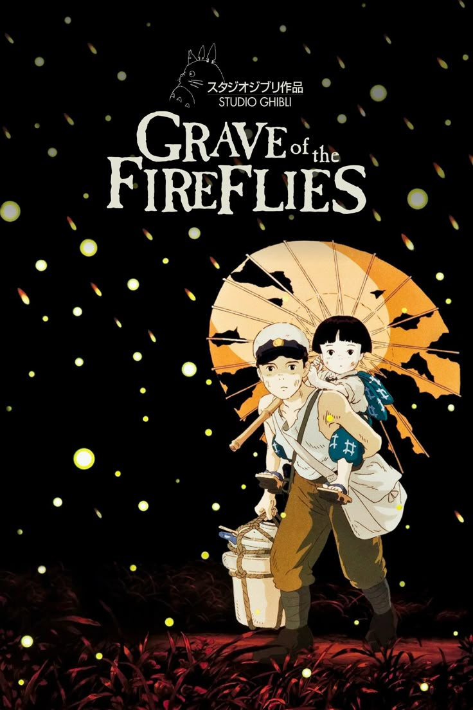
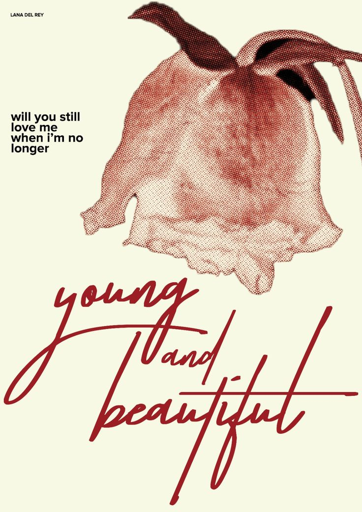
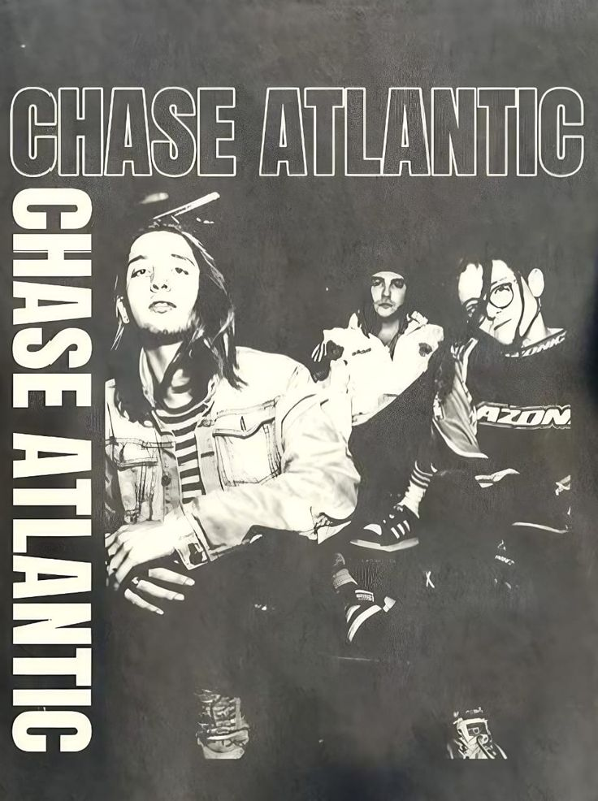
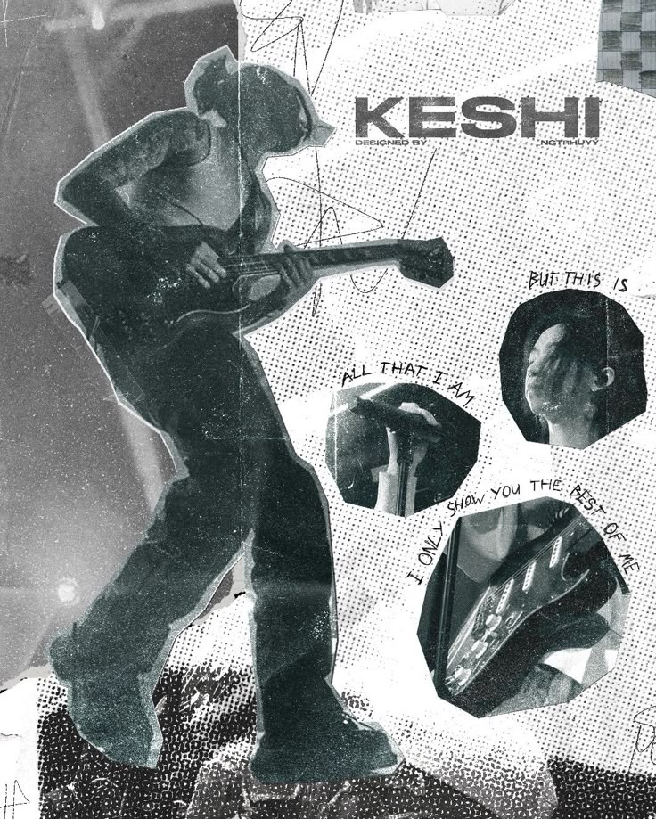
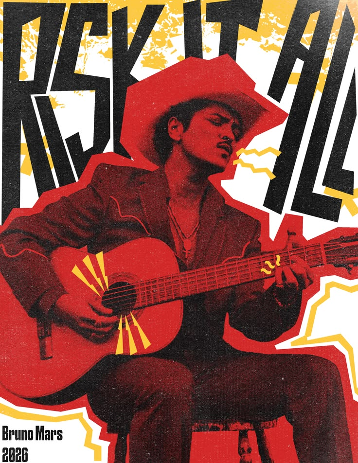

WandaVision
"But what is grief, if not
love persevering?"
Lion King
“Oh yes, the past can hurt.
But you can either run from it,
or learn from it.”
Twinkling Watermelon
“Music is the only drug
allowed by the government.“
Better Days
"You spend your life looking for better days,
but later you realize that the days
that passed were the best."
Everything Everywhere All at Once
"You don't have to worry about that here.
Just be a rock."
Five Feet Apart
"If I'm going to die, I'd like
to actually live first."
Grave of The Fireflies "Why do fireflies have to die so soon?"
Monster
"If only some people can have it, that's not happiness.
That's just nonsense. Happiness is something
anyone can have."







Wildflower
Billie Eilish
Hit Me Hard and Soft (2024)
"Well, good things don't last
And life moves so fast"
Don't Look Back in Anger
Oasis
(What's the Story) Morning Glory? (1995)
"Take me to the place where you go
Where nobody knows"
About You
The 1975
Being Funny in a Foreign Language (2022)
"Do you think I have forgotten
About you?"
Young and Beautiful
Lana Del Rey
The Great Gatsby (2013)
"Will you still love me when I got nothing
but my aching soul?"
I Think I'm Lost Again
Chase Atlantic
Beauty in Death (2021)
"This world is big, it'll kill me
if I don't figure shit out"
Beautiful
Treasure
The First Step:Treasure Effect (2021)
"Thanks to my experience I've
never lose my way"
Blue
Keshi
Bandaids (2020)
"Blue moon in different phases
Blue moon in different places"
Locked Out of Heaven
Bruno Mars
Unorthodox Jukebox (2012)
"Never had much faith in love or miracles"